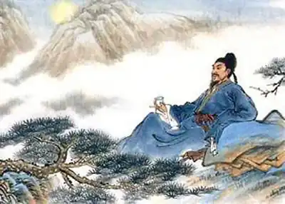

ЛІ БО
(705-762)
3 618 року в Китаї починається правління династії Тан, котре тривало майже триста років. Внаслідок об'єднання ворогуючих між собою князівств було створено могутню танську державу. Доти небачена широта спілкування із зовнішнім світом сприяло знайомству з різними досі незнайомими для Китаю релігійними поглядами. Ця широта сприяла релігійному терпінню, а разом з ним і свободі висловлення думок. Традиційна повага до літератури набула практичного характеру: одним із головних предметів на екзаменах на чиновничі посади була поезія. Поезія усіляко заохочувалася нерідко правителями країни, які самі писали вірші. У політику і літературу прийшли вихідці з сімей середніх і дрібномаєтних землевласників, котрі виросли в селах і були більш близькі до народу, ніж стара аристократична верхівка. Це не могло не вплинути на літературу. Світогляд танського літератора набагато розширився. Життєвий досвід поета вже не обмежувався рідним селищем і недалеким містечком, а охоплював велику країну з неоднаковими умовами життя в різних її куточках. Поет, який усе частіше був державним чиновником, і своєю службою, і творчістю змушений був брати участь у житті країни. Коли ми звертаємося до танської літератури, передусім ми говоримо про ліричну поезію. Вона продовжила й розвила великі досягнення минулого й піднялася на небувалу височінь. Долаючи внутрішню порожнечу та квітчастість віршів V— VI століть, перші танські поети хоча й були носіями цих вад, але на їхню творчість вже лягла печатка нового: майбутня простота форми й глибина поетичної думки. У танські часи переживали свій розквіт п'яти— і семисловні вірші з двохрядковою строфою, з обумовленим чергуванням тонів, з єдиною римою. Вони дали велику можливість застосуванню в поезії розмовної мови. Новаторство танської поезії поєднувалося з традиційністю зображальних засобів і висловлювалося не тільки у відкритті нової, але — часто — в поглибленні звичної теми. Гори й ріки, застава та місяць, мандрівник, верба й весна — все це існувало й розвивалось у китайській поезії з давніх-давен, і все це набувало протягом століть нову забарвленість. У русі поезії від піднесеності до повсякденності й конкретності відобразився той генеральний напрямок поезії танського часу, на якому були досягнуті найбільші її перемоги. На початку танської поезії стояли такі видатні майстри, як Ван Бо, Лу Чжао-лінь, Чень Цзі-ан, Мен Хао-жань, Гао Ші та інші. Окрім "тихої" поезії того часу була й інша — поезія битв і мандрів, яка зображувала людину в неспокійних, бурхливих обставинах. Кожен із цих різних поетів так чи інакше передував творчості своїх геніальних сучасників — Лі Бо та Ду Фу. Лі Бо, відомий поет давнього Китаю, народився у 701 році, був родом з теперішньої провінції Сичуань. Китайські біографи зображують Лі Бо геніальним безумцем, який черпає своє натхнення в келиху з вином, у товаристві інших поетів, які утворюють поетичну співдружність спочатку з шести членів ("Шестеро мудрих з Бамбукового потоку"), а потім з восьми ("Восьмеро безсмертних Винної чаші"). Такі товариства в ту епоху відігравали роль літературних шкіл. Ще в юному віці поет мріяв допомагати людям, і через те він обрав незвичайний шлях для молодої людини його покоління: не складав іспитів, пішов з дому, жив осторонь від людського житла, мандрував, захоплювався лаоською самотністю. Йому було понад сорок років, коли імператор покликав його до свого палацу і нагородив званням ханьлінь, що його нині ми б вважали академічним ступенем. Лі Бо залишався поетом, незалежним у переконаннях і вчинках, а це не збігалося з чиношануванням і придворними правилами. Через три роки Лі Бо залишив столицю заради нових подорожей і зустрічі з поетами Ду Фу, Гао Ші та іншими. Того часу стався бунт Ань Лу-шаня, і через Лушань, де спинився поет, проходили війська Лі Ліня, молодшого брата імператора Су-цзуна. Лі Бо погодився піти до нього на службу, коли Лі Лінь зазіхнув на престол, і поета як його прихильника, було кинуто до в'язниці, а потім заслано в далекий Єлан. Потім його пробачили, повернули посеред дороги. Через кілька років після цих подій, у 762 році, Лі Бо помер у домівці свого родича Лі Ян-біна, якому ми зобов'язані збіркою творів поета. Залишилося понад дев'ятьсот його віршів. Лі Бо вирізнявся серед сучасників своєю незвичайністю. Він звеличував хоробрих мандрівників, захищав знедолених і відчував себе переможцем, який не знає перешкод. Інші поети засмучувалися невдачами, ремствували на буденні негаразди. Лі Бо ще в юнацькому віці відкинув від себе ці дріб'язкові тривоги й жив у безперервному поетичному горінні, опановував у самому собі цілий світ і тому не страшився самотності. Сила образів поезій Лі Бо вражала його сучасників. Як поет він перебуває в самій гущині, у найтіснішому скопищі народу, і його можна бачити звідусіль, і сам він бачить весь сучасний йому світ — ніщо не спроможне сховатися від його погляду. Лі Бо писав про все, що перебувало в колі танської поезії. У його "прикордонних" віршах ми знаходимо мужність, суворість і чарівний ліризм, відчуваємо романтику походу, але він пише сміливі вірші проти війн, що їх була велика кількість у 40-50-ті роки VIII століття. Автор п'ятдесяти дев'яти віршів "Давнього", він порівнює себе з Конфуцієм і викриває неправду. У його творчості можна простежити зв'язок із давньою народною поезією. Свої вірші він будував, вдало поширюючи межі правил, підказував новим поетам шляхи просування вперед, відновлюючи китайське віршування, наближаючи словник поезії до словника життя. Незалежність Лі Бо була логічною розбудовою ідеалу свободи, він був упевнений у своїй місії поета-пророка, поета-вчителя, і вона вимагала від нього повної самовідданості. Поет був величним, але в ставленні до людей не мав і тіні пихатості: його поглинають людські турботи, він дає людям втіху, освічує їх, вчить співчуттю. Ліричні мотиви Лі Бо властиві для всієї давньокитайської поезії. У поезії Лі Бо, видатного стиліста свого часу, це — оспівування вина, квітів, місяця, дружби, природи в цілому. Найбільш видатні твори Лі Бо: "Розмірений, чистий наспів", "Віяння давнини", "Самотньо співаю під місяцем", і класичний зразок прози: "Весняне бенкетування в персиковому саду", а також численні чотировірші. Окремі твори Лі Бо перекладені головними європейськими мовами. ОСНОВНІ ТВОРИ: "Розмірений, чистий наспів", "Віяння давнини", "Самотньо співаю під місяцем", і класичний зразок прози: "Весняне бенкетування у персиковому саду". ЛІТЕРАТУРА: 1. Журнал "Восток", перев. В. М. Алексеева, изд. "Всемир-ной литературы".— Л., 1923; 2. "Антология китайской лирики", перевод Ю. К, Шуцкого, издание "Всемирной литературы".— Л., 1923.